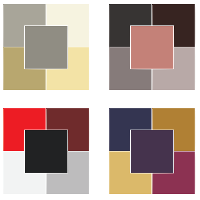
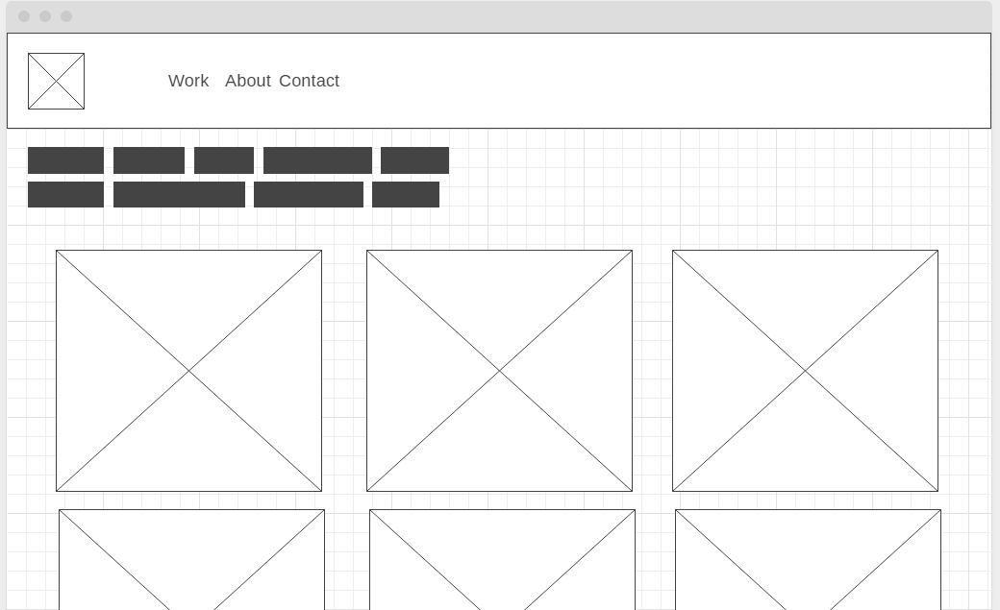
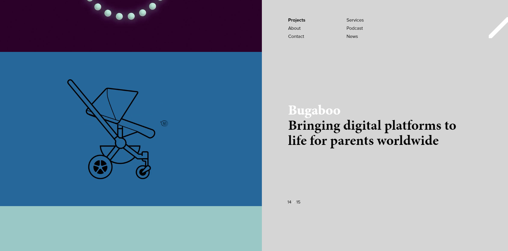

supernice Assingment 2
So here's the plan: MOODBOARD & CO:

Gimme some wireframes too

But to be honest, after doing some research, I'm considering this style more
This might be the only site I really aspire to. It’s funny, we’re creatives, have fun.

Flat colours and a half/half split that allows for your work to pop while explaining it.
Easy, clearly defined projects to navigate to, with a nice preview on the side. And everything is right there, love that
The idea of one big feature and then a 'catalogue' really seems like a cool way to go about this.
I have absolutely no idea what I want to do as an 'artist' so I double don't know what that means for my trajectory. Oh well.
I dont really know if I want to be a 3D designer (I definitely don't) but this guy kills it and his site is amazing
No picture for that one, you need to visit the site. Its worth it.
maybe I want to focus more on my writing as a presentable? in which case, Akwaeke Emezi definitely knows how to do it.